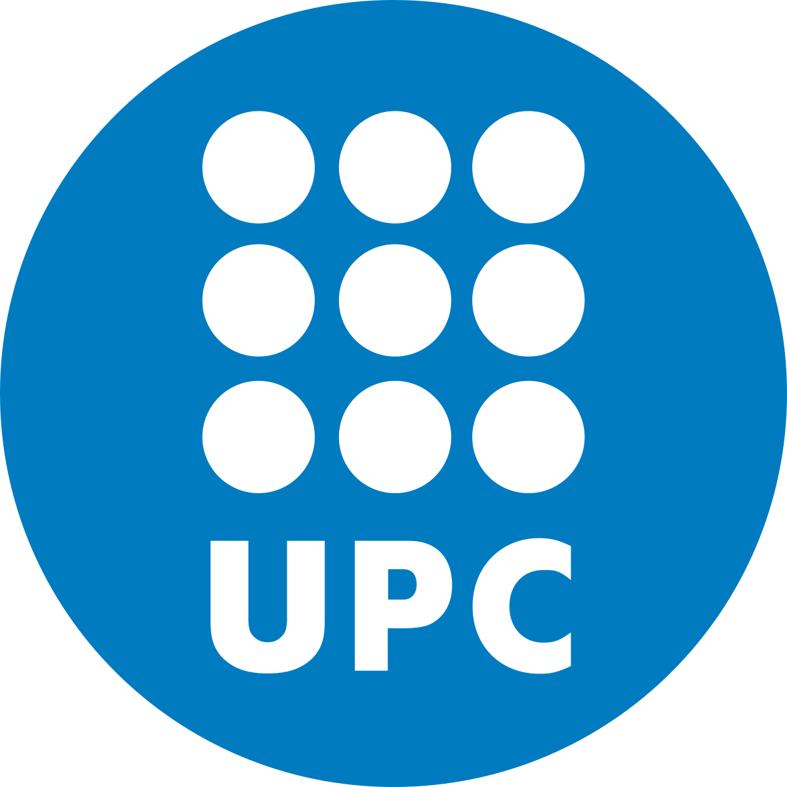

Tech PORTFOLIO
-
Generative AI EngineerJan 2025 - present
.png) Currently developing POCs using RAG and Agents to solve public administration challenges, using Databricks and LangGraph.
Currently developing POCs using RAG and Agents to solve public administration challenges, using Databricks and LangGraph. -
Data ScientistOct 2023 - Des 2024
Developed Machine Learning POCs tailored to the specific needs of public sector departments.Master in Data Science2023-2025Hos Serverhosting prøvede jeg kræfter diverse netværksteknologier. Jeg konfigurerede og installerede routere, switche, servere. Jeg ydede support for kunder, samt stod for indkøb af ny hardware.Data Engineer InternOct 2022 - Jan 2023
 Performed database engineering tasks, as well as front-end and back-end development.Bachelor's in Financial Maths2022
Performed database engineering tasks, as well as front-end and back-end development.Bachelor's in Financial Maths2022 Erasmus at The University of Glasgow, Scotland, UK. Acquired expertise in Mathematical Finance principles.Bachelor in Mathematics2019 - 2023
Erasmus at The University of Glasgow, Scotland, UK. Acquired expertise in Mathematical Finance principles.Bachelor in Mathematics2019 - 2023 Built my mathematical foundation from the ground up, which helped me develop problem-solving skills with a mathematical mindset and encouraged me to think outside the box.
Built my mathematical foundation from the ground up, which helped me develop problem-solving skills with a mathematical mindset and encouraged me to think outside the box.Skills
Here are some of my skills, on which I have worked
Programming skills: Python
Python
 R
R
 SQL
SQL
 Databricks
Databricks
 Neo4j
Neo4j
 Celonis
Generative AI knowledge: LLMs, RAG, vector search indexing, agentic chatbots, MLflow, LangGraph, prompt engineering, and cloud deployment/optimization, retrieval systems, and performance optimization.
Celonis
Generative AI knowledge: LLMs, RAG, vector search indexing, agentic chatbots, MLflow, LangGraph, prompt engineering, and cloud deployment/optimization, retrieval systems, and performance optimization.